Variables Cefeidas: Relación periodo-luminosidad
Las estrellas variables cefeidas son un tipo en la clasificación de estrellas variables pulsantes. Estas tienen la capacidad de variar su radio periódicamente, y por lo tanto, su luminosidad.
Las estrellas variables cefeidas son de población I supergigantes y su clasificación espectral está entre las clases de tipo F-K, sus periodos varían entre 1 y 5 días y sus variaciones de brillo tienen una amplitud de 0.1-2.5 magnitudes. La forma de la curva de luz presenta un aumento rápido de magnitud de brillo, seguido de un lento decaimiento del mismo, FIgura 1. Lo más importante de las variables cefeidas es la relación entre su magnitud absoluta y el periodo de sus variaciones, la que fue descubierta por Henrietta Leavitt estudiando cefeidas de la Nube Menor de Magallanes en 1912.
Como este tipo de estrellas son visibles a grandes distancias (recordemos que son supergigantes) la relación periodo-luminosidad (PL) puede utilizarse para medir distancias de galaxias vecinas.
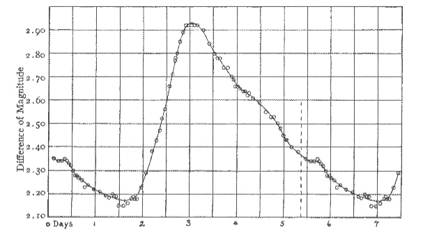
Figura 1, curva de luz de  Cefeidad (Stebbis, Joel, Ap, J, 27,188,1908)
Cefeidad (Stebbis, Joel, Ap, J, 27,188,1908)
La historia de las estrellas variables comienza en el siglo XVI, en Europa cuando en 1572 se vió brillar a la supernova Tycho Brahés, si bien no fue una variable de tipo pulsante, este indiscutible evento causó controversias con la aristotélica concepción que se tenía del universo y generó grandes discusiones filosóficas.
En agosto de 1595, un astrónomo amateur notó que la estrella Mira disminuía muy lentamente su brillo hasta desaparecer del cielo y con el transcurso de los meses volvía a recuperar un brillo similar al que había tenido (en 1660 se le determinó un periodo de 11 meses).
Estas variaciones periódicas se asociaron a manchas oscuras en la superficie de la estrella, que estaría rotando con una velocidad constante, disminuyendo el brillo de la misma al pasar por el hemisferio que mira hacia la Tierra (como se sabía desde Galileo que ocurría en el Sol).
Tuvieron que pasar dos siglos para que se encuentre otra variable. En 1784, John Goodricke (1764-1786) de York, Inglaterra, descubre la segunda Cefeida, Cefeida, que variaba regularmente cada 5d, 8h y 48 min. El descubrimiento de esta variable le costó la vida, John muere a los 21 años de una neumonía que contrajo mientras observaba la estrella.
Si bien se descubrieron más variables, desde la aparición .php) Cefeida, fue hacia fines del siglo XIX y comienzos del siglo XX que las cefeidas se volvieron estrellas verdaderamente importantes: Henrietta Leavitt (1868-1921) hace el descubrimiento fundamental sobre las pulsaciones del las cefeidas.
Cefeida, fue hacia fines del siglo XIX y comienzos del siglo XX que las cefeidas se volvieron estrellas verdaderamente importantes: Henrietta Leavitt (1868-1921) hace el descubrimiento fundamental sobre las pulsaciones del las cefeidas.
Henrietta Leavitt (1868-1921), cortesía de la Universidad de Harvard
Henrietta trabajó analizando observaciones de la Universidad de Harvard para Edward Charles Pickering (1846-1919). El trabajo de ella consistía en comparar placas fotográficas de un mismo campo del cielo tomadas en distintos momentos. Durante su trabajo, en 1912 descubre alrededor de 2400 cefeidas con periodos entre 1 y 50 días. Pero varias de éstas que se encontraban en la Nube Menor de Magallanes llamaron su atención. Se interesó en estudiar sus particularidades, y al hacerlo, notó que las variables de mayor brillo aparente tenían periodos más largos, éste seria el descubrimiento trascendente relacionado con las variables Cefeidas.
Teniendo en cuenta que todas las estrellas de las Nubes de Magallanes están aproximadamente a la misma distancia, la diferencia en magnitud aparente sería la misma que la diferencia en magnitud absoluta. Así el brillo absoluto estaría relacionado con la periodicidad de las variaciones.
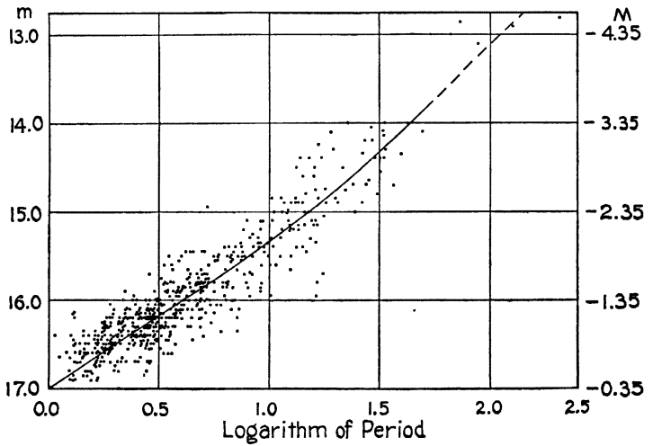
Cefeidas de la Nube Menor de Magallanes. Por Shapley,Galaxias, Universidad de Harvard Press, Cambridge, MA, 1961.
Relación Período-Luminosidad
La relación encontrada entre el periodo y magnitud aparente, si conozco la distancia a la estrella, es una relación periodo magnitud absoluta y por lo tanto una relación de periodo luminosidad. Conociendo la luminosidad, que es una propiedad intrínseca de la estrella, podemos calcular su distancia. La relación entre la magnitud visual m, la magnitud absoluta M y la distancia d, esta dada por.
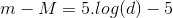
A esta diferencia m - M se la llama modulo de distancia y se la denota con  .
.
Por lo tanto, si se puede determinar esta relación periodo - magnitud visual o periodo - luminosidad, usando solamente el periodo de una cefeida, se podrían medir distancias a estrellas lejanas. Las distancias que se obtendrían serian mucho mayor a las calculadas usando el método de paralaje (método primario para determinar distancias, pero sólo aplicable a unos pocos parsecs).
Ejnal Hertzprung (1873-1967) usando la estrella Polaris, la más cercana de las cefeidas clásicas y de la que se conocía muy bien el periodo, logra por primera vez hacer un ajuste de la relación periodo - magnitud visual.
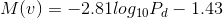
Usando la luminosidad se obtiene:
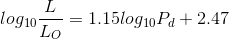
Usando este ajuste Hertzprung calculó la distancia a la Nube Menor de Magallanes en 11.3 kpc (hoy sabemos que está a unos 60 kpc).
Si bien los astrónomos de esa época estaban muy entusiasmados por el descubrimiento, desconocían la parte física que daba lugar al fenómeno. Esto causaría que las mediciones realizadas usando el método tuviesen asociado un error de calibración.
Efectos que causan error en la calibración del método:
Efecto por metalicidad (opacidad, abundancia) :
Es Zhevakin quien en 1950 identificó el fenómeno y lo explica diciendo que en algunas capas de la estrella la energía de compresión es usada para producir ionización en lugar de aumentar la temperatura. Esto conduce a un aumento de la densidad, que gana a la temperatura, lo que significa un aumento de opacidad. Dicho fenómeno ocurre por el movimiento de las capas de la estrella, mientras la estrella se comprime o se expande, y depende de la composición química de las mismas. Este factor esta dado por el cociente entre la densidad de la estrella y su temperatura de la siguiente forma
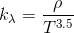
Estos cambios en la opacidad son el origen de las pulsaciones. La opacidad depende de los elementos existentes en esa zona de la estrella (abundancia). Por lo tanto diferentes abundancias pueden modificar el mecanismo de pulsación, y entonces la relación PL.
Incerteza en el tamaño de la estrella:
Una estrella , como cualquier elemento con masa, tiene relacionada una frecuencia fundamental. En 1920 Arthur Eddington (1882-1944) muestra que el periodo de una estrella variable es inversamente proporcional al de su densidad. Teniendo en cuenta lo anterior y que la variación de luminosidad depende de la temperatura, la cual varía durante el periodo de la estrella entonces para densidades y radios distintos tendríamos distinta la luminosidad
Extinción estelar:
Otro efecto que no depende de las características físicas de la estrella y que contribuye a aumentar el error en la observación es el de la extinción estelar. Dado que el largo camino que la luz atraviesa para llegar a la tierra contiene gas y polvo interestelar, la intensidad de la misma disminuye en un porcentaje considerable. Esto significa que la intensidad que medimos no es la emitida por la estrella. Para disminuir dicho efecto en la relación PL comenzaron a realizar observaciones en la banda H del infrarrojo. Con este método de observación se ajustó la relación usando 92 estrellas de la Nube Mayor de Magallanes
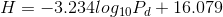
Relación Periodo-Luminosidad-Color:
Considerando que cuanto más brillante es una estrella más azul es, se establece una dependencia entre la luminosidad y el color que debería tenerse en cuenta al medir distancias lejanas.
Sabiendo que a partir de poder medir la magnitud de una estrella en una determinada longitud de onda, puede usarse la diferencia entre magnitudes de distintas longitudes de onda para obtener el índice de color, el cual se agrego al infrarrojo quedando así una relación mas precisa determinada por la forma.
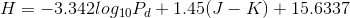
En la siguiente imagen podemos ver, a la izquierda la relación PL para 92 cefeidas de la Nube Mayor de Magallanes no corregida por color y a la derecha la las mismas observaciones usando la relación corregida por color P-L-C.
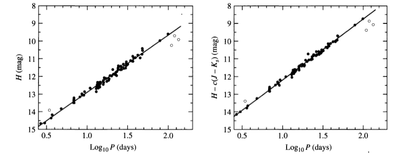
Imagen de Persson, E:E:, et al., Astron. J.,128,2239,2004
La misma idea se aplicó a la magnitud visual absoluta. Usando un juego de filtros de colores BV donde B está centrado en el azul, longitud de onda 3650A y V en el visual, longitud de onda 5500A. Se corrigió la relación teniendo en cuenta cuan azulada o enrojecida era la estrella.
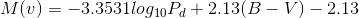
En las cefeidas clásicas el índice de color (B-V) puede variar entre 4 y 1 magnitudes. A la relación corregida por el índice de color se la llamó periodo-luminosidad-color.
Contaminación en la determinación de la magnitud:
Al medir la magnitud de brillo de una cefeida, la fuente pulsante lejana deja de distinguirse sola y en realidad en la medición se esta sumando el brillo de estrellas vecinas y de las que se encuentren en la línea de la visual. En este caso nuevamente tenemos que la magnitud de brillo medida no es la que fue emitida por la estrella, acarreando un error en la determinación de la distancia usando el método.
Incerteza en la distancia a Nube Mayor de Magallanes:
La determinación de las distancias a la Nube Mayor de Magallanes está dada por la relación PL calibrada usando cefeidas cercanas de la Via Láctea. Si las mediciones de las distancias a las cefeidas de nuestra galaxia estuvieran mal medidas entonces el método calibrado con las cefeidas de la Nube Mayor de Magallanes tendrá asociado un error. Esto se soluciona calibrando constantemente las distancias a estrellas vecinas usando herramientas más precisas.
Para 1980 las variables Cefeidas clásicas fueron separadas en grupos . Uno es el de las DCEPS, Cefeida, éstas tienen una amplitud en magnitud no mayor que 0.5 en el visual, una curva bastante simétrica y su periodo no sobrepasa los 7 días. Otro grupo son las CEP(B), su particularidad es que tienen dos o mas modos de pulsación, un P0 y un P1, que están asociados a la frecuencia de pulsación de la estrella, el P0 corresponde a la frecuencia fundamental y el P1 al primer tono. El periodo fundamental esta entre 2 a 7 días y P0/P1 es aproximadamente 0.71.
Se usó la Nube Menor de Magallanes para calibrar la relación entre periodo magnitud y absoluta media, en visual e infrarrojo.
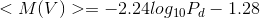
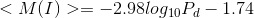
Actualmente al método se lo usa calibrado con la distancia a la Nube Mayor de Magallanes usando un modulo de distancia (18.486±0.047)mag. o una distancia de (49.80±1.10) kpc. Los datos están calculados usando paralajes ultraprecisas y fotometria por parte de Hubble Space Telescope (HST) e HIPPARCOS. Usando esta calibración y teniendo en cuenta que la magnitud bolométrica media de una estrella es de -6 mag se pueden medir distancias de hasta 20 Mpc.
La cefeida más lejana que se conoce está en la galaxia NGC 4751, una galaxia en el núcleo del cumulo de Virgo, a una distancia de 14.9±1.2 Mpc (Benedetto et al., 2012). .
La relación periodo luminosidad de las cefeidas ha sido extremadamente importante para determinar distancias astronómicas desde que Henrietta descubrió la relación entre el periodo y la luminosidad, y Hertzprung la formuló.
Si bien se realizaron varias correcciones al problema de precisión del método para calcular distancias usando cefeidas, nunca fue resuelto.
Y aunque en los últimos años se han realizado esfuerzos para demostrar que estos errores están asociados de forma sistemática con la metalicidad de la estrella, aún hoy para la calibración de cefeidas se requiere su distancia precisa, calculada por algún otro método como paralaje espectroscópicas, supernovas u otros.
Teniendo en cuenta lo anterior es que la galaxia NGC 4258 se vuelve importante al pensar en una nueva escala de distancias extragalácticas.
Lo relevante de la galaxia mencionada anteriormente es que en los últimos años se ha podido calcular su distancia, de 7.2 ± 0.5 Mpc, aunque se cree que tiene incluidos errores sistemáticos y se espera reducirlos a un 3% (!).
La propiedad por la que se pudo calcular su distancias es que esta posee máseres de agua que orbitan alrededor de su agujero negro central.
Logrando esta nueva calibración la relación-periodo luminosidad dejaría de depender de la distancia a la Nube Mayor de Magallanes.
Pensando a largo plazo se espera que GAIA, determinando paralajes trigonométricas ultraprecisas, resuelva los problemas sistemáticos relacionados con la metalicidad dado que GAIA podrá cubrir todo el espectro de periodos de cefeidas y resolver algo más que una centena de años de incertidumbre.
Bibliografía
Hannu Karttunen,Variable Stars en Fundamental Astronomy, 5ta edición (2007).
Towards a fundamental calibration of the cosmic distance scaleby Cepheid variable stars, G. P. Di Benedetto (2012).
Introduction to stellar astrophyisics. Böhm-Vitense, Erika.
H.W. Duerbeck,Variable Stars en Handbook of practical astronomy.

Comments (0)